Standard Analysis
STANDARD_ANALYSIS.RmdA Transcription Start Site (TSS) represents the position of the first base of a transcript to be transcribed by an RNA polymerase. Most genes do not have a single TSS, but rather a collection of TSS positions collectively referred to as a Transcription Start Region (TSR). Variation in TSS selection influences transcript stability (Malabat et al. 2015) and translation (Rojas-Duran and Gilbert 2012) as well as the domain composition (Mejía-Guerra et al. 2015) or localization (Ushijima et al. 2018) of the encoded protein. Furthermore, variations in TSS usage have been observed during organismal development (Haberle et al. 2014, Zhang et al. 2017, Danks et al. 2018) as well as in diseases such as cancer (Demircioğlu et al. 2019).
TSRexploreR offers a series of analysis and plotting functions that allow deep exploration of TSSs and TSRs. Here, we describe the standard TSRexploreR analysis pipeline.
Preparing Data
This example uses a set of S. cerevisiae TSSs identified with STRIPE-seq. There are many ways to import TSSs into TSRexploreR; this vignette uses a named list of GRanges as input into the function that creates the TSRexploreR object.
library("TSRexploreR")
library("ggplot2")
# Load example TSSs
data(TSSs)
# Keep only the WT sample for now
TSSs <- TSSs[stringr::str_detect(names(TSSs), "WT")]
# Load genome assembly and annotation
assembly <- system.file("extdata", "S288C_Assembly.fasta", package="TSRexploreR")
annotation <- system.file("extdata", "S288C_Annotation.gtf", package="TSRexploreR")
# Generate sample sheet
sample_sheet <- data.frame(
sample_name=stringr::str_glue("S288C_WT_{seq_len(3)}"),
file_1=NA, file_2=NA,
condition=rep("Untreated", 3)
)
# Create the TSRexploreR object
exp <- tsr_explorer(
TSSs,
sample_sheet=sample_sheet,
genome_annotation=annotation,
genome_assembly=assembly
)Initial TSS Processing
After the TSSs are loaded into the TSRexploreR object, a few processing steps are necessary in order to prepare the data for analysis.
Format TSSs
The first step is to convert the TSSs into a table that will facilitate downstream analysis.
exp <- format_counts(exp, data_type="tss")Normalize TSSs
The next step is to normalize TSS counts. There are three options: counts per million (CPM), median of ratios (MOR, implemented in DESeq2), and trimmed median of M-values (TMM), implemented in edgeR. MOR and TMM are recommended for comparison between samples from different conditions. If the counts you input were already normalized, this step can be safely skipped.
exp <- normalize_counts(exp, data_type="tss", method="DESeq2")TSS Annotation
After formatting counts and optionally normalizing them, TSSs are annotated relative to known genomic features. This function takes either the path and file name of a ‘GTF’ or ‘GFF’ file or a ‘TxDb’ package from Bioconductor. The example below uses a ‘GTF’ file from Ensembl (R64-1-1 Release 99) and annotates each TSS to the annotated start of the nearest gene.
exp <- annotate_features(exp, data_type="tss", feature_type="transcript")Naive Threshold Exploration
All TSS mapping methods contain some degree of background in the form of low-count TSSs, particularly within gene bodies. This background can complicate downstream analysis, but it can largely be removed via a simple thresholding approach wherein TSSs below a certain number of counts are removed from further consideration. If a genome annotation is available, a thresholding plot may help in picking this count threshold. In this approach, the fraction of TSSs that are promoter-proximal is plotted against a range of read thresholds. The number of features (genes or transcripts) with at least one unique TSS position at each threshold is also indicated graphically.
We note that most plotting functions in TSRexploreR return ggplot objects. This will be explicity stated under the ‘Value’ section of the function help documentation (e.g. ?plot_threshold_exploration). ggplot objects can be customized beyond a select few style arguments in the plotting functions with standard ggplot2 syntax as demonstrated below.
plot_threshold_exploration(exp, samples="S288C_WT_1", point_size=1) +
scale_color_viridis_c() 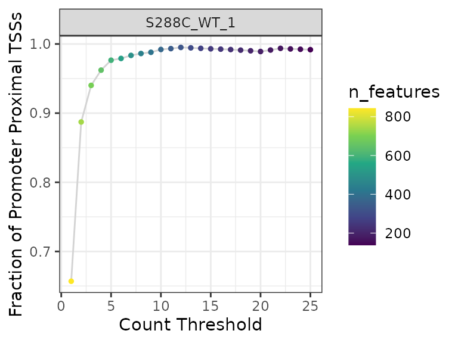
Looking at the plot, a threshold of three or more reads is a sensible choice: there is a precipitous drop in detected features for a comparatively low gain in promoter-proximal TSS fraction at higher thresholds. Next we, apply this threshold to the data, dropping any TSS without at least 3 counts in one sample.
exp <- apply_threshold(exp, threshold=3, n_samples=1)TSS Correlation
Assessing correlation between samples provides information on replicate similarity and can also give a cursory indication of the degree of difference between biologically distinct samples (e.g. different genotypes or treatments).
Correlation Matrix Plots
For correlation analysis, MOR- or TMM-normalized should be used. By default, Pearson correlation analysis is performed.
plot_correlation(
exp, data_type="tss",
use_normalized=TRUE, font_size=12,
heatmap_colors=viridis::viridis(100)
)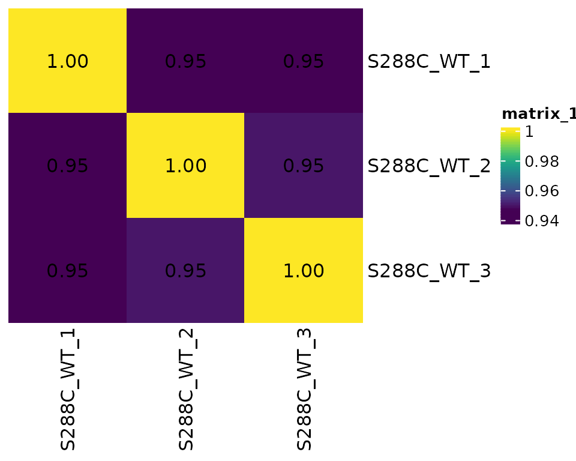
TSS Genomic Distribution
As part of the initial TSS processing, TSSs are annotated relative to known features. This information can be used to explore the genomic distribution of TSSs. Additionally, it can be used to plot the total number of detected features and the number of detected features with a promoter-proximal TSS.
Genomic Distribution Plot
A stacked bar plot can be generated to showcase the fractional distribution of TSSs relative to known features.
plot_genomic_distribution(exp, data_type="tss", samples="S288C_WT_1") +
scale_fill_viridis_d(direction=-1, name="Annotation")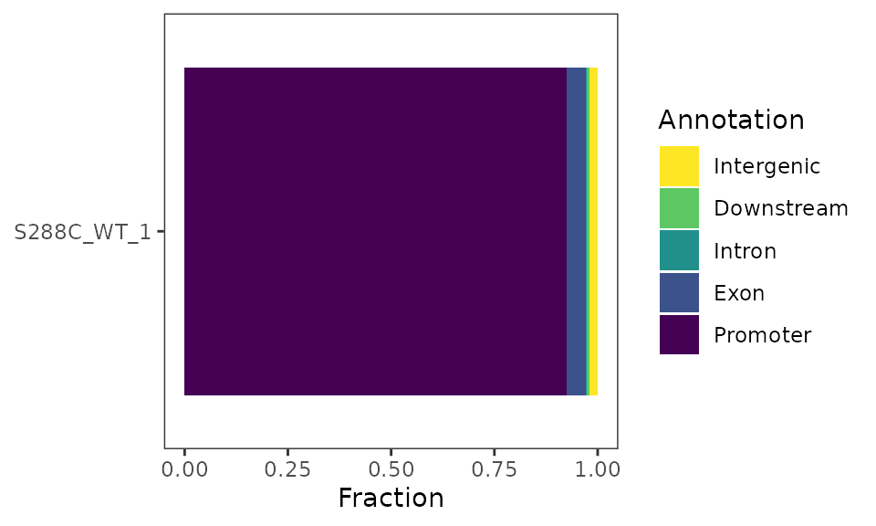
Feature Detection Plot
The number of features detected and fraction of features with a promoter-proximal TSSs can be displayed as a stacked barplot.
plot_detected_features(exp, data_type="tss", samples="S288C_WT_1") +
scale_fill_viridis_d(direction=-1)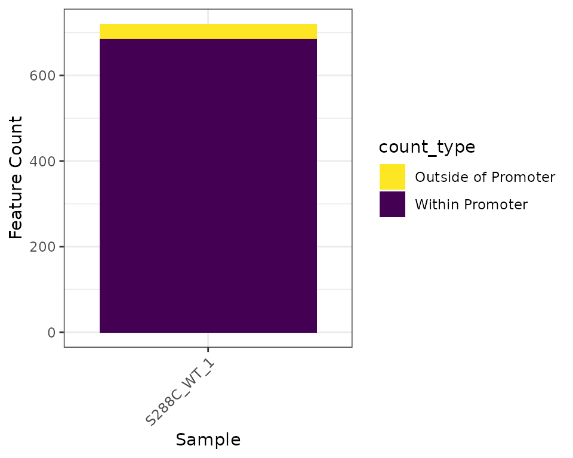
Density Plots
Density plots are useful for visualizing where TSSs tend to be located relative to annotated TSSs. The current yeast genome annotation does not contain information on 5’ UTRs, so density plots are centered on annotated start codons and it is expected that the maximum density would be slightly upstream of the plot center. Most other organisms have 5’ UTR information in their genome annotations, with the UTR length corresponding to the distance between the start codon and the most distal TSS detected. This would result in a centered density plot.
plot_density(exp, data_type="tss", samples="S288C_WT_1")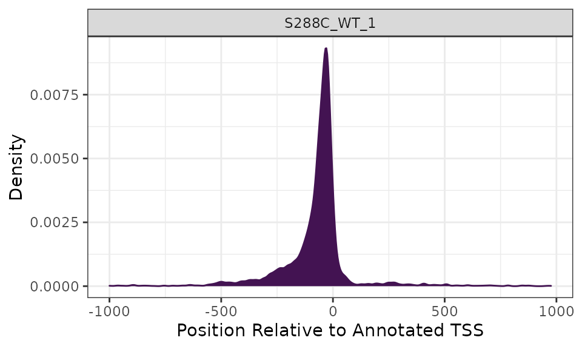
Heatmaps
While a density plot gives an overview of TSS distribution relative to annotated start codons or TSSs, it does not illustrate the strength of its constituent TSS positions. To visualize TSS signal relative to the start positions of all annotated features (genes or transcript), a heatmap can be generated. However, as TSS are single points and may be sparsely distributed, it can be somewhat difficult to visualize them as a heatmap.
plot_heatmap(
exp, data_type="tss", samples="S288C_WT_1",
upstream=250, downstream=250,
use_normalized=TRUE,
rasterize=TRUE, raster_dpi=150
)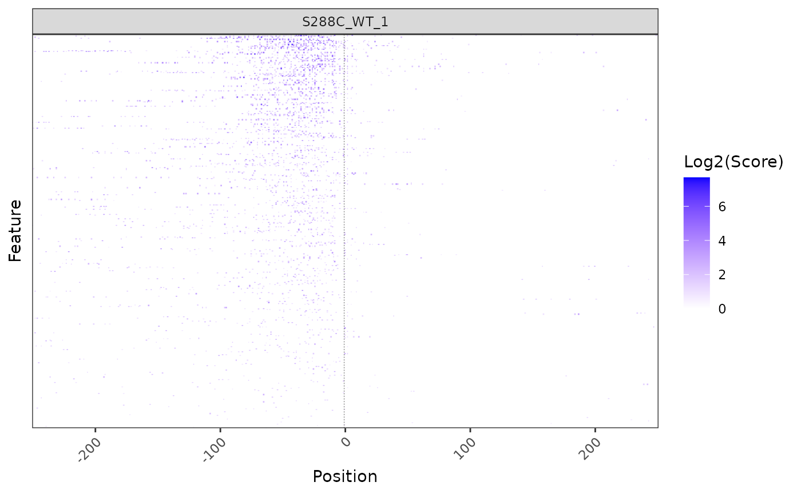
Sequence Analysis
TSSs tend to occur within certain sequence contexts, and this context can vary between species. Knowing this TSS sequence bias can give mechanistic and biologically relevant information on promoter structure.
TSS Sequence Logo
Generating sequence logos around TSSs is a good first step in determining the sequence context of TSSs. For example, in S. cerevisiae it has been reported that there is a pyrimidine-purine bias at the -1 and +1 positions, respectively (Zhang and Dietrich 2005). Furthermore, stronger TSSs tend to have an adenine at the -8 position (Policastro et al. 2020, Qiu et al. 2020).
To analyze TSS sequence context, TSRexploreR retrieves sequences centered on TSSs from a ‘FASTA’ genome assembly or ‘BSgenome’ object. This example uses the Ensembl R64-1-1 Release 99 FASTA.
plot_sequence_logo(exp, samples="S288C_WT_1")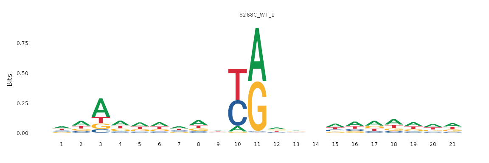
Sequence Color Map
A sequence logo compresses positional information into a compact form, providing the amount of information each base contributes to the “average” sequence of each base in the TSS window. Sequence information can also be viewed without aggregation as a sequence color map, wherein each row represents the window around a TSS and each column represents a specific position relative to this TSS. These display conventions are analogous to those used in a heatmap. Each base is assigned a color and displayed in this two-dimensional space. The prevalence of colors in certain positions can give further evidence of specific sequence contexts. The same genome assembly and retrieved sequences that were used to make the sequence logos above are used here.
plot_sequence_colormap(exp, samples="S288C_WT_1", rasterize=TRUE)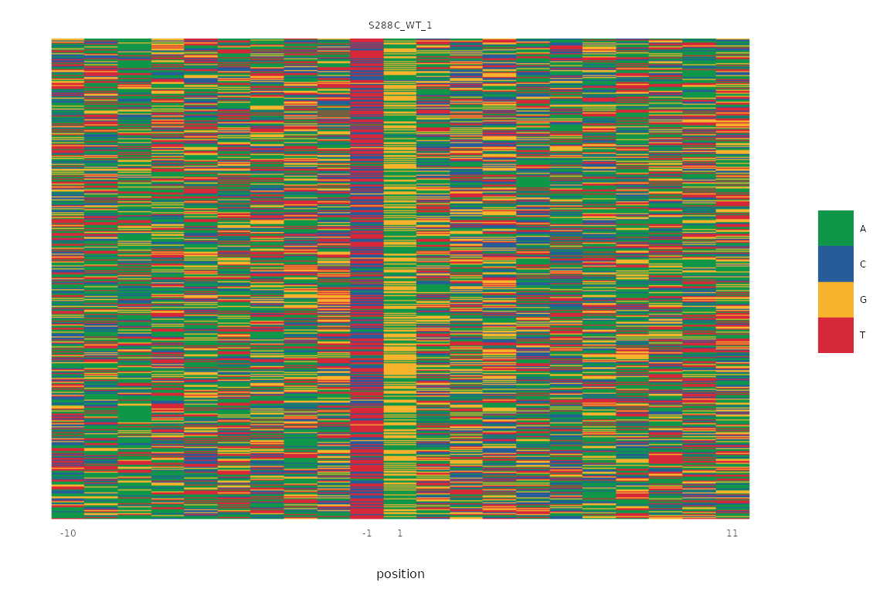
Dinucleotide Frequency
As previously discused, organisms often have a specific TSS sequence context. This function explores the fraction of each potential dinucleotide at the -1/+1 positions of all TSSs, where the +1 position is the TSS.
plot_dinucleotide_frequencies(exp, samples="S288C_WT_1") +
scale_fill_viridis_c()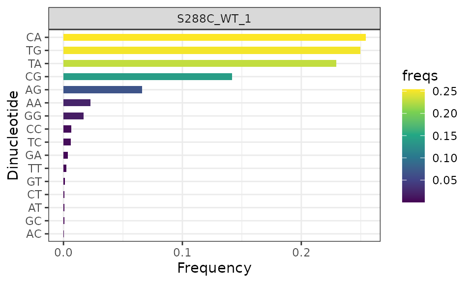
Clustering TSSs
Transcription initiation is rarely homogenous; it is generally the case that a gene will have multiple TSSs clustered into a TSR, and so analyzing TSRs versus individual TSSs will provide more realistic information on initiation. Moreover, TSR shape features have been shown to correlate with differential enrichment of core promoter motifs (Carninci et al. 2006, Hoskins et al. 2011, Cvetesic et al. 2019), as well as distinct gene classes (Lu and Lin 2019).
Distance Clustering
To identify TSRs, TSRexploreR uses a distance clustering method. This approach groups TSSs that pass a certain read threshold and are within a certain distance of one another into TSRs. Alteratively, if you have called TSRs using other methods (e.g. Paraclu or RECLU), they can be imported directly. Here, we cluster TSSs supported by at least 3 counts into TSRs.
exp <- tss_clustering(exp, threshold=3, max_distance=25)## Warning in .local(x, row.names, optional, ...): Arguments in '...' ignored
## Warning in .local(x, row.names, optional, ...): Arguments in '...' ignored
## Warning in .local(x, row.names, optional, ...): Arguments in '...' ignored
## Warning in .local(x, row.names, optional, ...): Arguments in '...' ignored
## Warning in .local(x, row.names, optional, ...): Arguments in '...' ignored
## Warning in .local(x, row.names, optional, ...): Arguments in '...' ignoredAssociating TSSs with TSRs
TSRexploreR provides great flexibility for working with TSSs and TSRs. After TSRs are called or imported, TSSs can be assigned to TSRs with which they overlap. In this example, TSSs are associated with the TSRs detected above using distance clustering.
exp <- associate_with_tsr(exp)Initial TSR Processing
Now that the TSSs have been clustered and associated with TSRs, the TSRs can undergo initial processing. This involves annotation, calculating various metrics of TSR shape and strength, and optional normalization of TSR scores.
TSR Metrics
After TSSs have been associated with TSRs, various metrics describing TSR shape and strength can be computed. First, the dominant TSS (that is, the highest-scoring TSS) within a TSR will be annotated. Then, various shape features such as inter-quantile range, shape index, and balance will be calculated.
exp <- mark_dominant(exp, data_type="tss")
exp <- tsr_metrics(exp)Annotate TSRs
It is recommended to annotate TSRs if a genome annotation is available.
exp <- annotate_features(exp, data_type="tsr")TSR Correlation
Similar to looking at TSS correlation, assessing TSR correlation before further analysis is good practice.
Correlation Matrix Plots
Normalized TSR counts are determined by summing the normalized counts of all associated TSSs; normalization of TSR counts is not performed directly.
plot_correlation(
exp, data_type="tsr", n_samples=1,
threshold=3, use_normalized=TRUE, font_size=12,
heatmap_colors=viridis::viridis(100)
)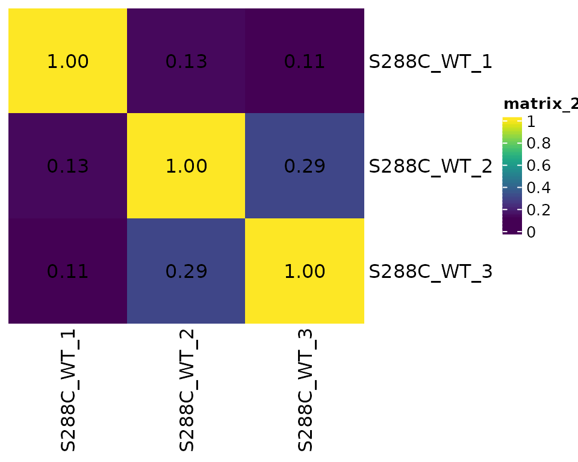
TSR Genomic Distribution
As for TSSs, it is expected that TSRs will be be enriched upstream of annotated start codons. This can be assessed by visualizing their genomic distribution.
Genomic Distribution Plot
plot_genomic_distribution(exp, data_type="tsr", samples="S288C_WT_1") +
scale_fill_viridis_d(direction=-1, name="Annotation")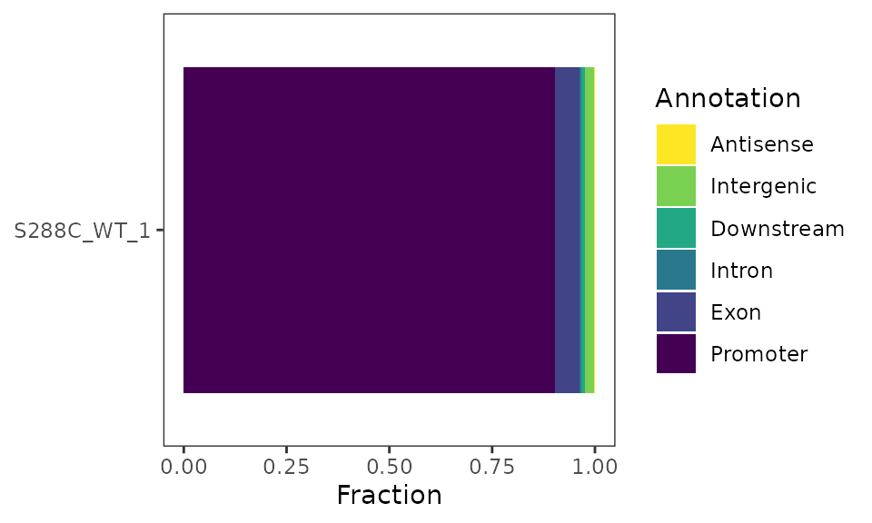
Feature Detection Plot
The number of features detected and fraction of features with a promoter-proximal TSSs can be displayed as a stacked barplot.
plot_detected_features(exp, data_type="tsr", samples="S288C_WT_1") +
scale_fill_viridis_d(direction=-1)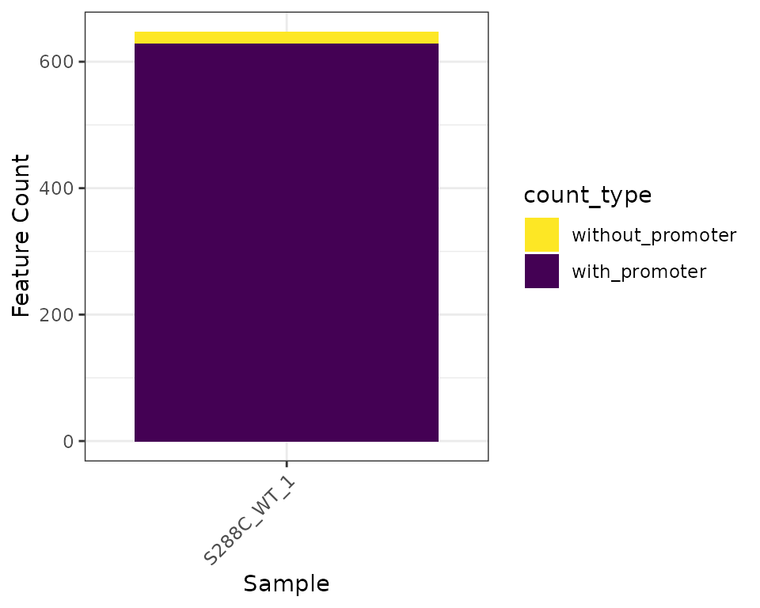
Density Plots
As for TSSs, density plots can be generated for TSRs.
plot_density(exp, data_type="tsr", samples="S288C_WT_1")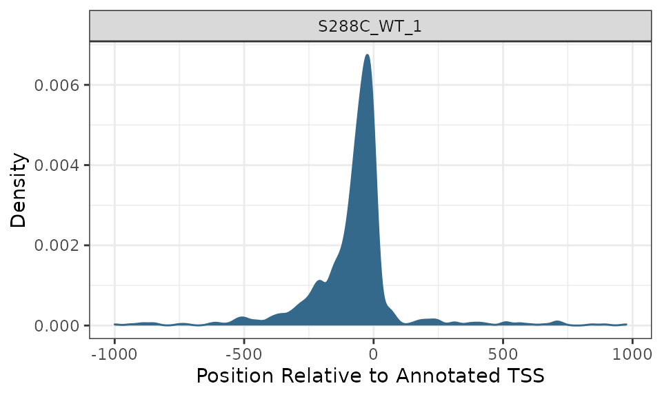
Heatmaps
TSR heatmaps provide a global view of TSR distribution and strength relative to annotated start codons or TSSs.
plot_heatmap(
exp, data_type="tsr", samples="S288C_WT_1",
upstream=500, downstream=500,
use_normalized=TRUE,
rasterize=TRUE, raster_dpi=150
)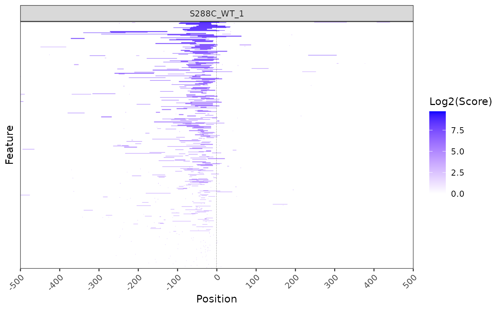
TSR Metrics and Shape
After clustering TSSs into TSRs, several descriptive and quantative measures were calculated: TSR width, log2 + 1 TSR score, shape index, inter-quantile width, and peak index.
Summary Plots
Summary plots can be generated for most TSR metrics. In this example, we generate violin plots of the log2 + 1 transformed TSR score and TSR width.
plot_tsr_metric(exp, tsr_metrics=c("score", "width"), log2_transform=TRUE, samples="S288C_WT_1")
Gene Tracks
Viewing TSSs and/or TSRs in gene tracks can be useful for a variety of reasons. It can make clear which 5’ isoforms of a transcript are expressed, hint at potential misannotation of genes, and suggest 5’ UTR length In TSRexploreR, tracks can be created based on a gene/transcript name or genomic coordinates. Additionally, if tracks are generated based on genes/transcripts, the promoter region alone can also be displayed.
gene_tracks(
exp, feature_name="YDR418W", ymax=80,
samples=c(TSS="S288C_WT_1", TSR="S288C_WT_1")
)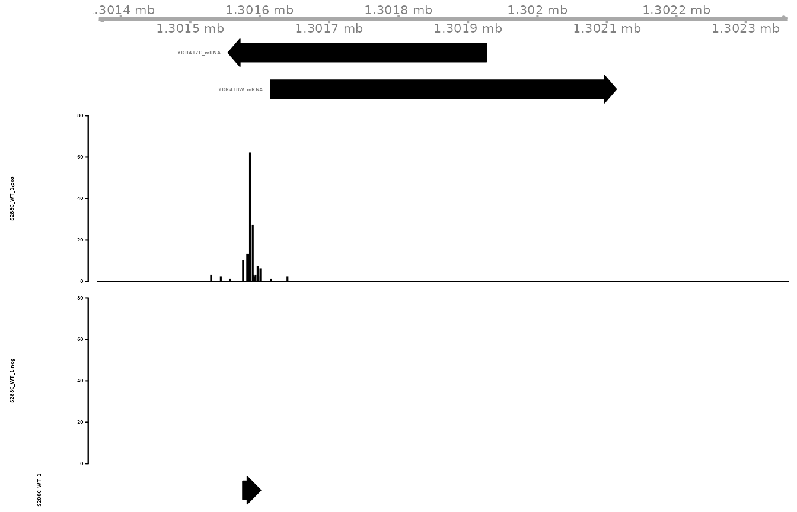
Data Access
TSRexploreR provides various convenience functions to access or export data stored in the objects. Below is an overview of some of the available functions.
-
tss_export: Export TSSs as bigWigs, bedgraphs, or as a tabular file. -
tsr_export: Export TSRs as bed or tabular file. -
get_counts: Get TSS or TSR table from object including additional analysis such as annotations, normalized counts, and computed metrics. -
get_diff_results: Get table of differential TSSs or TSRs. -
get_shifting_results: Get table of TSR shifting results.